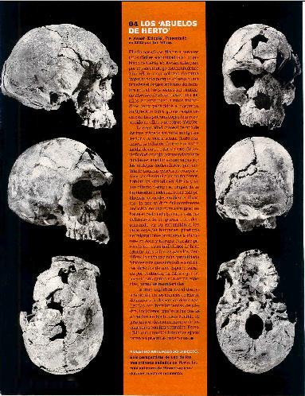

ASÍ ÉRAMOS
Trece hitos. Trece claves
para entender la evolución humana a lo largo de seis millones de años. De "Lucy"
a los hallazgos de la familia Leakey, de los autralopitecos a los neandertales.
Esta es una historia de pasiones y rivalidad para investigar la prehistoria.
Trece asombrosos pasos dados en el último siglo sobre nuestros orígenes. Hasta
llegar al último episodio, en plena polémica: "Little Foot", los fósiles surafricanos
que amenazan ahora con cambiar una vez más la película de nuestra vida.
Por Alicia Rivera
_________________________________________
EL PAÍS semanal nº
1432 de 7 de marzo de 2004
"Lucy Superstar"
El esqueleto casi completo, aunque sin cráneo, de "Lucy" es el hito más celebre de la paleoantropología. Fue descubierto en Etiopía por Donald Johanson en 1974. Una hembra de poco más de un metro de estatura y 3,2 millones de años Un genuino "Austrolopitecus afarensis"
01.- "LITTLE FOOT ¿VENIMOS DE SURÁFRICA?
Cueva de Sterkfonatein (Suráfrica). Fósiles redescubiertos por Ronald Clarke en 1994 aunque hallados en los años setenta.
En las profundidades de una cueva de Suráfrica. los científicos siguen rescatando, con todo el cuidado del mundo, las piezas de un esqueleto de un remoto antepasado humano que promete ser uno de los más excepcionales descubrimientos de la paleoantropología. El individuo, cuyos restos reposan incrustados en las rocas sedimentarias de esa cueva de Sterkfontein, murió hace algo más de cuatro millones de años. Se trata de un ser muy primitivo y, lo que es asombrosamente excepcional en esta ciencia que tanto tiene de aventura como de investigación, está casi completo y muy bien conservado, incluido su cráneo. Se llama Little Foot (Pequeño Pie), y quien lo ha visto allí embebido en la roca no sale de su asombro, como el paleontólogo español Juan Luis Arsuaga, que asegura: "Es lo más impresionante que he visto en mi vida". La comunidad científica internacional se mantiene en vilo a la espera de más noticias de esa cueva cercana a Johanesburgo.
Todavía queda mucha labor en el lugar para rescatar el esqueleto de la roca: gran parte está ya al descubierto, incluido el cráneo, pero apenas se han extraído fósiles. Los científicos surafricanos no descansan, y en una de sus últimas comunicaciones anunciaron que habían excavado fragmentos de la pelvis, de la parte superior de la pierna, de costillas y de vértebras, que se añaden a los trozos de extremidades ya rescatados.
La asombrosa historia del descubrimiento de LittIe Foot está a la altura de su interés científico y de la emoción que envuelve a veces la búsqueda de fósiles ancestrales del hombre. Tampoco falta la polémica, que promete ser intensa, ya que los científicos surafricanos, anunciando una antigüedad superior al yacimiento (4,17 millones de años) de lo que se pensaba hasta ahora (3 millones de años o 3,3 como mucho), revindican para estas cuevas surafricanas el distintivo de cuna de la humanidad, que hasta ahora tiene África oriental, donde se han encontrado los homínidos más antiguos. "Los fósiles de Sterkfontein, ahora bien datados, pueden aspirar a un lugar en el linaje del que la humanidad surgió", han advertido los científicos surafricanos.
La verdad es que Little Foot no se descubrió propiamente en una cueva, sino en unas cajas donde se guardaban huesos mezclados de las excavaciones de Sterkfontein de los años setenta. En 1994, Ronald Clarke estaba repasando su contenido cuando se dio cuenta de que había unos huesos de pies de primate con rasgos humanos: se trataba de fragmentos del pie izquierdo de un homínido. En un par de semanas encontró otros ocho fósiles de pierna y pie del mismo individuo entre los huesos guardados, y se le ocurrió enviar a dos de sus ayudantes a la cueva para que buscaran el origen de estos intrigantes fósiles. Lo realmente sorprendente es que lo encontraron. y en dos días. El tesoro hallado fue aún más llamativo, al identificarse el lado izquierdo de un cráneo completo.
Ya con el sobrenombre de LittIe Foot (oficialmente Stw 573), Clarke y sus colegas presentaron el descubrimiento en 1998. No se trata solamente del más completo cráneo de australopiteco jamás encontrado, sino que además está junto al más completo conjunto de piernas y pies (después se vio el resto del esqueleto); el estado de conservación es extraordinario, con la mayoría de los huesos del esqueleto intactos y las articulaciones en su postura natural.
Se trata casi seguro de un australopiteco, uno de aquellos homínidos que vivieron en África (en varias especies diferentes) hace aproximadamente entre cuatro y dos millones de años, y probablemente de un especimen similar a la célebre Lucy, el esqueleto casi completo (pero sin cráneo) de una hembra de Australopithecus afarensis, descubierto en Etiopía en los años sesenta.
Little Foot está recostado en la roca de uno de los niveles profundos de la cueva, con un brazo sobre la cabeza. Tal vez se cayó en esa hendidura del terreno y se mató. Los sedimentos lo cubrieron, los huesos se fosilizaron y allí quedó su esqueleto aprisionado en la roca.
Por los rastros de la fauna asociada al esqueleto de homínido, los científicos consideran que podría tener no más de tres millones de años, pero Clarke y sus colegas reclamaron en un principio una edad de 3,3 millones de años. Sin embargo, el año pasado, tras diferentes dataciones con un nuevo método experimental, los surafricanos anunciaron que el yacimiento tiene 4,17 millones de años.
Lo que está en discusión no son unos cientos de miles de años. sino el esquema mismo de los orígenes del hombre. Sin duda nacimos en África, dado que no se han encontrado restos de ancestros humanos anteriores a dos millones de años fuera de ese continente. Pero hasta ahora, la mayoría de los fósiles de los homínidos más antiguos aparecía en África central-oriental (Kenia, Tanzania y Etiopía), mientras que en Suráfrica los ejemplares eran más recientes.
Si Little Foot —y muchos de los 600 fósiles que se han rescatado hasta ahora en Sterkfontein— son tan antiguos como los de las regiones centrales del continente, tal vez los paleoantropólogos tengan que rehacer una vez más el esquema de la evolución primitiva del hombre. Deberán volver a encajar las joyas del pasado que han arañado a la tierra a lo largo del último siglo para reconstruir nuestra prehistoria, como la citada Lucy, el Muchacho de Turkana, el Niño de Taung, las huellas de Laetoli o los hombres de Atapuerca, no menos importantes, aunque más recientes.
Cráneo sorpresa.- Arriba , el espectacular cráneo de austrolopiteco enclautrado en la roca. Abajo,el paleontropólogo Ronald Clarke con la colección de huesos que dató de nuevo la década pasada
02.- "HOMBRE DE PEKÍN" : EL SUEÑO ASIÁTICO PERDIDO
Cueva de Zhoukoudian (China). Restos hallados en 1927 por Davidson Black.
Si todos los fósiles de homínidos y hombres remotos están envueltos en misterios profundos, el Hombre de Pekín tiene una capa doble, con su fugaz aparición en el mundo de la paleontología, para volver a perderse tras dos décadas a la luz. La historia de esta colección de huesos comienza en los años veinte del siglo pasado, en las cuevas de Zhoukoudian, a 50 kilómetros de Pekín, y el impulsor de la búsqueda es. una vez más, un entusiasta, el anatomista Davidson Black, dispuesto a encontrar el eslabón perdido, el hombre primitivo, en Asia. Con sólo unas cuantas piezas, Black anunció el Snanthropus pehkinensis en 1927, y dos años después el investigador chino Pei Wenchung encontró el primer fragmento craneal. Con los años, el tesoro creció, y se hallaron restos de varios individuos de entre 250.000 y 550.000 años. En 1941, casi 20 años después del primer hallazgo. se decidió enviar la colección de fósiles desde Pekín, hasta EE UU para garantizar su seguridad. Pero el precioso cargamento nunca llegó a su destino, ya que el convoy cayó en manos de los japoneses y, aunque no parece que se quedaran con los fósiles. nunca se volvió a saber nada de ellos, Por fortuna. se habían hecho unos excelentes moldes, y así, en forma de copia. se conoce ahora al Hombre de Pekín. Pese a las pretensiones de sus descubridores, ahora se sabe que estos pobladores asiáticos no eran los primeros ancestros humanos, sino unos emigrantes procedentes de África. El Hombre de Pekín es un Homo erectus, corno el Hombre de Java y los Homo ergaster del continente negro.
El hogar del "Homo Erectus" : Una de las entradas de Zhoukoudian, situadas a 50 Kms. de Pekín
03.- "MUCHACHO DE TURKANA" : 1,7 MILLONES DE AÑOS
Un solo fósil de homínido es un acontecimiento para los paleoantropólogos. Richard Leakey, haciendo honor al nombre familiar, tiene muchos en su haber, pero destaca en su colección de descubrimientos un esqueleto casi completo (nunca aparecieron los huesos de los pies y las manos) de hace 1,7 millones de años. Sólo Lucy, algo anterior, puede equipararse a este individuo fosilizado. Leakey y su equipo lo encontraron en las orillas del lago Turkana, en Kenia, en el verano de 1984, y desde el primer momento se dieron cuenta de que tenían un tesoro. El esqueleto es de un muchacho joven (unos 12 años) que murió por causa desconocida y su cadáver quedó sumergido en el fango. Su apodo: el Muchacho de Turkana. Lo sorprendente de este individuo es que es muy alto para su edad (1,6 metros), pero su cerebro era aún pequeño, con unos 800 centímetros cúbicos de capacidad. Pertenece a la especie Homo ergaster que es el equivalente africano del Homo erectus asiático (el Hombre de Java). Tal y como están las cosas en la paleoantropología actualmente, el Homo erectus es muy especial en la historia de nuestros antepasados, ya que ahora se sabe que fue la primera especie de homínido que, salió de África y se adentró en Asia. Eso fue hace algo más de dos millones de años. En Europa no se han encontrado fósiles de Homo erectus, los primeros pobladores humanos se retrasarían casi un millón dé años.
Con poco cerebro. Reconstrucción realizada por Kennis & Kennis de la cabeza del "Muchacho de Turkana; que debía de tener unos 12 años.
04.- LOS "ABUELOS DE HERTO"
El año pasado se dieron a conocer unos fósiles encontrados en el poblado de Herto, en Awash (Etiopia). por el paleontólogo estadounidense Tim White y sus colegas, de suma importancia porque afianzan con pruebas el origen africano del hombre actual. Esos fósiles del bautizado Hombre de Herto tienen 160.000 años y pertenecen a unos individuos muy parecidos a nosotros. aunque aun con algunos rasgos arcaico. Los paleontólogos han reconocido en ellos a nuestros abuelos.
La capacidad craneal de uno de los tres cráneos hallados es algo superior a la media actual (1.450 centímetros cúbicos, frente a nuestra media de entre 1.350 y 1.400). Su antigüedad encaja estupendamente con las estimaciones aportadas por los biólogos moleculares, que, mediante análisis genéticos comparativos y calculando las mutaciones, habían ya situado en África v en ese mismo tiempo el origen de la humanidad moderna. Sería esta población —o sus descendientes directos— la que saldría del continente ancestral en una nueva emigración hacia el resto del planeta. y esta vez definitiva: lo ocuparon todo, desplazando en su expansión a las otras especies humanas —producto de migraciones africanas anteriores— en Asia y Europa. Nuestro parecido con estos individuos de hace 160.000 años refuerza para los científicos la cada vez más consolidada hipótesis de que somos descendientes directos de una especie surgida por evolución en África que no mezcló sus genes con otras especies. como los neandertales.
Es muy significativo el descubrimiento en los cráneos de Herto, de marcas de descarnamiento realizadas con herramientas de piedra, incisiones iguales a las que se aprecian en los huesos cuando se practica el descarnamiento de los cadáveres con fines rituales. Es posible que aquellos humanos ejecutaran ya prácticas funerarias.

05.- LAETOLI: HUELLAS A DOS PIES
Alrededores del volcán Sadirnán, en Laetoli (Tanzania). Rastro encontrado por Mary Leakey en 1976.
Hace 3,75 millones de años, tres homínidos, probablemente de la misma especie que Lucy. pasaron por las proximidades del volcán Sadimán (Tanzania), que aquellos días escupía cenizas que se depositaban en el suelo. Había llovido, Y el polvillo del volcán se convirtió en una especie de cemento blando en el que se marcaron las huellas de varios animales, incluidos esos tres homínidos. "Un individuo grande, probablemente macho, se dirigía lentamente hacia el norte. Tras él partió un individuo menor que. por alguna razón, anduvo sobre las pisadas del primer individuo. Otro más joven saltaba a su lado. y en un punto se volvió para mirar a su izquierda. El sol coció muy pronto las huellas y las convirtió en impresiones en roca dura". Así reconstruye aquel instante de la larga historia de los ancestros del hombre Richard Leakey, el hijo de la mujer (Mary Leakey) que en 1976 descubrió el rastro de Laetoli.
El rastro conservado tiene medio centenar de metros. y los numerosos estudios que se han hecho de esas pisadas han dado mucha información (incluso hay científicos que opinan que sólo caminaron dos seres). Un individuo. el grande, mediría unos 140 centímetros: el pequeño, 120. Lo más importante es que aquellos homínidos ya caminaban como nosotros (y ningún otro primate actualmente lo hace). No es el cerebro, como muchos preferían. ni siquiera la utilización diestra de las manos lo que marca la diferencia entre humanos y monos. Es el caminar erguido sobre las extremidades inferiores el principal rasgo distintivo que los paleontólogos actuales buscan en los fósiles para incluir a un primate en la familia de los homínidos o dejarlo fuera. en el grupo de los monos. Y el rastro en las cenizas del volcán Sadimán fue y sigue siendo un hito. "Son las pisadas más antiguas de antepasados del hombre" comentó Mary Laekey.
06.- ATAPUERCA: LOS PRIMEROS EUROPEOS
Yacimiento de la Gran Dolina, en Atapuerca (Burgos). Fósiles del Homo antecesor ; sacado a la luz en 1994.
Los primeros ancestros del hombre que emigraron de su África natal lo hicieron hace unos dos millones de años. Se extendieron hacia Asia. ¿Y Europa? No se había encontrado ningún fósil que atestiguara la presencia de estos seres remotos anterior al medio millón de años hasta 1994. En el verano de ese año, los paleontólogos de Atapuerca (Burgos), haciendo una excavación de sondeo en un yacimiento prometedor denominado Gran Dolina, celebraron con toda satisfacción los primeros fósiles humanos europeos próximos al millón de años (más de 850.000, según las dataciones científicas). Hasta el momento, los casi 80 huesos rescatados, de cuatro individuos, son los más antiguos europeos que se conocen, y los han bautizado Homo antecesor. El estudio de las piezas y su entorno (sobre todo los restos de animales fosilizados junto a ellos) han desvelado rasgos importantes de aquellos individuos. Por ejemplo, Homo antecessor era caníbal, pues algunos huesos humanos muestran marcas de descarnamiento inequívocamente iguales a las que tienen los otros animales que seguramente se comían.
Gracias a los fósiles de la Gran Dolina, Juan Luis Arsuaga, Eudald Carbonell y José María Bermúdez de Castro, los tres directores del Proyecto Atapuerca, han podido reconstruir la historia del hombre en Europa hace al menos un millón de años: el Homo antecessor es el ancestro común (surgido en África) tanto de la línea evolutiva que llega a Europa (al menos a Burgos), y que dará lugar a los preneandertales y neandertales, que luego se extinguen, como de la línea que siguió evolucionando en África hasta el Homo sapiens que somos nosotros, que también emigró de ese continente (esta vez con pleno éxito) hace unos 100.000 años para ocupar todo el planeta, y que es la actual especie humana. Es decir, que esos remotos individuos de Atapuerca eran nuestros bisabuelos, pero también los abuelos de los enigmáticos neandertales, que desaparecieron hace 25.000 años.
Hace 800.000 años. Las marcasen los huesos del "Homo antecesor" muestran que practicaban el canibalismo.
07.- EL "QUERIDO MUCHACHO" DE MARY Y LOUIS LEAKEY
Garganta de Oiduval (Tanzania). Fósiles de "Homo habilis" hallados por el matrimonio Leakey en 1964.
Los muchos años de apasionadas y difíciles expediciones por África que realizó la más famosa pareja de paleoantropólogos de la historia, Louis y Mary Leakey, en busca de los ancestros de la humanidad se vieron recompensados sobre todo en 1964, cuando encontraron los primeros fragmentos de un remoto individuo que ellos bautizaron Dear Boy (Querido Muchacho). En realidad, al principio no fue más que una mandíbula de hace unos dos millones de años hallada en la garganta de Olduvai (Tanzania). Louis y sus colegas Phíllip Tobias y John Napier presentaron a bombo y platillo el hallazgo, denominado Homo habilis, la primera especie específicamente humana, capaz de fabricar instrumentos de piedra y con capacidad craneal que, aunque muy inferior a la media del hombre moderno, superaba el límite de 600 centímetros cúbicos que los descubridores arbitrariamente fijaron para definir la frontera entre los simiescos australopitecos y el género Homo. El debú de Homo habilis en la comunidad científica estuvo acompañado de controversias feroces, con la pretensión de Leakey de situar a su Dear Boy como especie clave a partir de la cual habrían evolucionado todas las humanas. Con el paso del tiempo, y acompañado de nuevos fósiles, el Homo de los Leakey se ha afianzado como un hito en la paleoantropología, aunque pocos defienden ya que tenga sentido científico fijar una especie, y ésa en concreto, como punto de ruptura en la evolución a partir del cual florece el género Homo. Los Homo habilis medirían poco más de 1,50 y pesarían menos de 45 kilos. Serían individuos frágiles en la sabana africana, desenvolviéndose entre peligrosas fieras. Más que cazadores serían animales carroñeros que completarían su dieta con una buena proporción de vegetales. La especie era mucho menos capaz que el Homo erectus, que hace en torno a 1,6 millones de años, o incluso un poco antes, dio un paso decisivo de madurez al salir por primera vez de África.
Pisadas en ceniza. El estudio de las huellas de estos homínidos que ya andaban erguidos ha servido para marcar la diferencia fundamental con los monos.
Investigadores míticos. Louis y Mary Leakey, en sus excavaciones en Tanzania en 1961. Tres años después alumbraron a "Dear Boy"
08.- LOS ORÍGENES REMOTOS: HACE SEIS MILLONES DE AÑOS
Yacimientos de Etiopía y Kenia "·Ardipitecus ramidus" , "Australopitecus anamensis" y "Hombre del Milenio". Entre 1994 y 2000.
Al menos dos especies de hace poco más de cuatro millones de años se disputan en los últimos tiempos el título de homínidos más antiguos: el Ardipithecus ramidus (Etiopía) y el Australopithecus anamensis (Kenia). A la competición se ha sumado el que puede ser el vencedor: el llamado Hombre del Milenio (Kenia), de seis millones de años de antigüedad.
Los paleontólogos estiman que la separación evolutiva de las ramas de los ancestros humanos y el resto de los primates debió producirse hace más de cuatro millones de años, ya que a partir de esa época son abundantes los rastros de especies de homínidos ya claramente diferenciadas de los monos. Pero ¿cuándo se produjo esa separación?, ¿cuál sería la primera especie de homínidos?, ¿qué rasgo definiría esa transición? La capacidad de caminar sobre las dos extremidades traseras es, desde luego, una capacidad definitiva. pero ese cambio no se produce de la noche a la mañana. En 1994, el famoso Tim. White y sus entonces estudiantes etíopes G. Suwa y B. Asfaw anunciaron el descubrimiento y análisis de unos fósiles muy antiguos que habían hallado en la región del Awash Medio (Etiopía), en el territorio de los afár. Los fósiles fueron datados en 4,4 millones de años. White y sus colegas los definieron como una nueva especie Australopithecus ramidus, pero después han propuesto un nuevo género: Ardipithecus ramidus. Pero White y sus colegas no han dado a conocer todavía todos los huesos encontrados (aproximadamente medio centenar) y se mantiene la duda de si realmente esos Ardipithecus ramidus eran bípedos.
Para complicar más las cosas a White, Meave Leakey, la esposa de Richard Leakey y nuera de los célebres Louis y Mary Leakey, presentó poco después la identificación de unos fósiles encontrados hacía años, acompañados de nuevos hallazgos relacionados con ellos, de otros individuos de hace 4,2 millones de años. Fueron bautizados Australopithecus anamensis y proceden de los yacimientos del lago Turkana (Kenia). Para algunos, esta especie podía ser la misma que la Ardipithecus ramidus; para otros se trataría de una versión primitiva de Australopithecus afarensis (la célebre Lucy),Parece claro que anamensis era bípedo y ramidus no. Sin embargo, aparentemente, los separan sólo 200.000 años, un suspiro en términos evolutivos.
También en Kenia, en la región de Baringo, se encontraron unos fósiles más antiguos aún, de hace unos seis millones de años. Son restos de al menos cinco individuos, machos y hembras que tendrían el tamaño de un chimpancé. Fueron presentados por sus descubridores, Brigitte Senun y Martin Pickford, en 2000, y según estos dos científicos serían ya bípedos. Fueron bautizados como el Hombre del Milenio.
La escisión del mono. Reconstrucción de la cabeza del "Australopihecus anamensis" de Meave Laekey.
09.- "NIÑO DE TAUNG" : EL PRIMER FÓSIL AFRICANO
TAUNG (Suráfrica) "Australopithecus africanus", el eslabón perdido. Cráneo encontrado en 1924 por Raimond Dart
El Niño de Taung tendría tres o cuatro años cuando murió y un cerebro del tamaño de un chimpancé, pero ya caminaba erguido. Raimond Dart, surafricano, profesor de anatomía, se dio cuenta por la forma de la base del cráneo y el ángulo en que encajaría la columna vertebral. Pero casi nadie estaba dispuesto a aceptarlo cuando dio a conocer este fósil que él mismo había identificado incrustado en la piedra calcárea de una cantera junto a la localidad de Taung, en 1924, y que bautizó como Australopithecus africanus (mono del sur). Este cráneo incompleto, el primer fósil de la familia humana encontrado en África por la ciencia, tiene 2,5 millones de años.
Como casi siempre que una idea innovadora irrumpe en la comunidad científica, sufre su tiempo hasta alcanzar el reconocimiento que se merece. Para Dart y su Niño de Taung fueron más de 20 años. Los paleontólogos no se rindieron inmediatamente al hallazgo y elaboraron muchas pegas; prefirieron aparcarlo en la línea de los simplemente monos: demasiado mono para ser un ancestro del hombre, y además africano, cuando la mayoría pensaba que Asia debía de ser la cuna de la humanidad. Descubrimientos posteriores en la misma zona del sur de África v estudios más reposados acabaron dando la razón a Dart con su eslabón perdido.
Pero este estudioso surafricano tuvo enorme influencia durante muchos años en la manera en que los paleontólogos interpretaron a los primitivos homínidos. La imagen de la prehistoria remota según esta visión la puso Stanley Kubrick en el comienzo de su película 2001, una odisea del espacio, con aquellos ya célebres homínidos violentos, agresivos carnívoros y asesinos despiadados ante sus congéneres. Dart dotó a sus homínidos primitivos de instinto cazador, rasgo determinante para abandonar los árboles y adoptar el bipedismo.
Tuvieron que pasar muchos años y fósiles para que los paleontólogos se dieran cuenta de que los más antiguos ancestros humanos serían básicamente herbívoros con alguna incursión en las proteínas de origen animal, pero sobre todo como carroñeros que aprovecharían la carne y el tuétano de los huesos de animales ya muertos. Básicamente, inofensivas criaturas; muy diferentes del mono asesino de Dart.
Calavera protagonista. Trabajos para crear una holografía del "Niño de Taung" para la portada de National Geographic en 1985
10.- "LUCY" : LA REINA DE ETIOPÍA
Hadar (Etiopía). Esqueleto de una hembra "Australopithecus afarensis" hallado en 1974 por Donald Johanson y Maurice Taieb
En el campamento de la expedición franco-estadounidense dirigida por Donald Johanson y el francés Maurice Taieb, en la áspera tierra de Hadar (Etiopía), a finales de noviembre de 1974, no paró de sonar en un casete un hit de los Beatles: Lucy in the sky with diamonds. Aquella noche desbordada de euforia, el campamento estaba de fiesta, y duró hasta la madrugada. La celebración no podía ser más oportuna en un campamento de paleontólogos: Johanson había encontrado los huesos fósiles de un homínido muy antiguo, de unos 3,2 millones. El esqueleto casi completo, seguramente el más famoso de la historia de la paleoantropología, era de una hembra, y recibió el nombre obvio: Lucy. Desde luego, Lucy no era un mono porque caminaba ya como nosotros, completamente erguida; pero su cerebro era como el de un chimpancé, no creaba instrumentos de piedra y desde luego carecía de lenguaje. Medía poco más de un metro y pesaría unos 30 kilos, según han calculado los paleontólogos, pero los machos de la especie (Australopithecus afarensis) son sensiblemente mayores. Estos animales vivían ya en un medio abierto de sabana, no en los bosques como los otros primates, alimentándose sobre todo de vegetales. Lucy se convirtió pronto en una celebridad y un mito. Fue el primer esqueleto casi completo de un homínido (sólo se ha encontrado otro después, y es más moderno) y supuso una conmoción en la paleontología, que hasta ese momento no había tenido un individuo completo del pasado remoto en el laboratorio, sino fósiles sueltos (aunque valiosísimos, sin duda).
Locomoción, parto, alimentación, morfología, estatura... de los Australopithecus afarensis son datos esenciales arrancados a la pequeña Lucy, que reside en Addis Abeba (Etiopía) tras su estudio exhaustivo en Estados Unidos por Johanson y sus colegas. Lamentablemente, la pieza del esqueleto predilecta de los paleontólogos, el cráneo, es el talón de Aquíles de Lucy: apenas quedan fragmentos incompletos de la cabeza, y además deformados.
Una hembra sin cabeza. Donald Johanson muestra una reconstrucción en plástico de como pudo ser el cráneo de "Lucy"
11.- "HOMBRE DE JAVA" : UN ESLABÓN EN EL SIGLO XIX
Rio Solo, en Java (Indonesia). Fósiles del "Antropopithecus" descubiertos en 1891 por Eugene Dubois.
El médico holandés Eugene Dubois estaba convencido a finales del siglo XIX de que la teoría de la evolución de las especies de Charles Darwin. era correcta, aunque discutida aún, y que el hombre, por tanto, no era producto del directo diseño divino, sino de la mutación y la selección a partir de especies anteriores. Darwin había aventurado la hipótesis de que el hombre se habría originado en África, dado que sólo en ese continente se encuentran sus parientes los monos antropomorfos; pero no se había encontrado aún ni un solo fósil que corroborara la idea. Dubois, en línea con algún estudio que apuntaba hacia el Este como probable cuna del hombre, se fijó en Asia, y se enroló en el ejército holandés con el firme propósito de encontrar el eslabón perdido entre el mono y el hombre.
En octubre de 1891, en el río Solo del este de Java, Dubois descubrió parte de un cráneo que en principio tomó por un mono y lo bautizó Antropopithecus (simio antropomorfo). Pero al año siguiente encontró cerca del primer lugar un fémur, y vio que pertenecía a una criatura que caminaba sobre las dos patas traseras. Presentó su hallazgo en 1894 bautizándolo Antropopithecus erectus y estimó una antigüedad de un millón de años. Se habían encontrado ya restos de humanos del pasado (el neandertal en Europa), pero eran mucho más recientes y seguramente no todos entendieron su significado, de forma que la sensacional noticia que traía Dubois sentó como un bombazo tanto entre la comunidad científica como entre la religiosa.
Las críticas y el rechazo amargaron a Dubois, hasta el punto de que, harto de tanta crítica y rechazo hacia lo que con tanta ilusión y afán había descubierto, guardó los preciosos fósiles bajo su propia casa y allí se quedaron ocultos durante 30 años.
Las dataciones más recientes. pese a la dificultad de fijar fechas en los yacimientos del río Solo, indican que el Hombre de Java, como se le conoce mundialmente, tiene 1,7 millones de años, y se le considera un Homo erectus. Por cierto, llegaría allí procedente de África. su continente de origen. Una vez más, Darwin estaba en lo cierto.
El homínido asiático. Reconstrucción de la cabeza de un "Hombre de Java" a partir del cráneo del río Solo
12.- "EXCALIBUR" : UNA JOYA DE 350.000 AÑOS
Sima de los Huesos, en Atapuerca (Burgos). Completa colección de fósiles descubiertos bajo la dirección de Juan Luis Arsuaga.
Nadie sabe a ciencia cierta cómo ni por qué un considerable número de individuos, antepasados de los neandertales, acabó en un agujero profundo en el fondo de una cueva de la sierra de Atapuerca (Burgos), llamada la Sima de los Huesos. lasta ahora se han rescatado restos fósiles (de color cremoso como la mantequilla) de al menos 32, pero debe de haber bastantes más que irán saliendo cuando el equipo de paleontólogos dirigido por Juan Luis Arsuaga siga avanzando en la excavación. Y lo realmente asombroso es que entre los más de 2.000 fósiles ya rescatados hay piezas de todo el esqueleto, desde los poderosos cráneos hasta los más frágiles huesecillos del oído, de individuos de todas las edades. Es algo único en el registro fósil internacional, en ningún otro lugar se ha recogido una colección tan completa de restos de humanos del pasado.
La riqueza de la Sima de los Huesos ha dado un vuelco a la paleoantropología mundial porque por primera vez los científicos se pueden plantear con fósiles encima de la mesa, y no sólo hipótesis, un auténtico estudio de población de seres remotos y reconstruir cómo vivían, qué enfermedades sufrían, si llegaban a viejos, cómo eran sus partos, qué comían aquellos europeos de hace 350.000 años.
La difícil excavación de la Sima de los Huesos comenzó en los años ochenta, y los científicos saben que tienen tarea para mucho tiempo. Además, Arsuaga y sus colegas se han planteado una tarea hasta hace poco imposible: determinar si aquellos humanos tan antiguos tenían o no lenguaje. Pero la Sima de los Huesos es un pozo de sorpresas, y ha proporcionado una de las piezas más enigmáticas y emocionantes que se conocen del pasado: un hacha de cuarcita roja, bellamente elaborada, tan insinuante que la han bautizado Excalibur y ha aparecido junto a los restos de aquellos hombres, en ese agujero donde no se ha encontrado ningún otro instrumento, ni herramienta, ni vestigio de actividad. Los paleontólogos creen que la depositaron allí, junto a los muertos, tal vez como homenaje, sus congéneres vivos. Aquellos humanos de hace,350.000 años practicaban ya alguna forma de rito funerario
Enigmática hacha. "Excalibur" ha dado la pista para pensar que aquellos antepasados practicaban ya ritos funerarios.
13.- NEANDERTALES : LOS HOMBRES QUE SE EXTINGUIERON
Valle del Neander (Alemania ) Primeros fósiles hallados a mediados del siglo XIX
Una vieja y acalorada discusión entre paleoantropólogos plantea cómo reaccionarían los viajeros del metro de una ciudad cualquiera si un neandertal (vestido con traje y corbata para no desentonar demasiado con su vestimenta prehistórica de pieles) pasease entre ellos. Para unos científicos, un neandertal disfrazado de contemporáneo no llamaría mucho más la atención que un hombre especialmente corpulento. Sin embargo, para otros, sus destacados rasgos primitivos lo delatarían. Las dos posturas sintetizan las interpretaciones que se han hecho de los fósiles de unos seres humanos típicamente europeos que vivieron en el continente hace entre 200.000 y 30.000 años. Fueron contemporáneos de nuestros antepasados directos, de nuestra propia especie llegada de África en una nueva y definitiva migración, y seguramente se conocieron; pero acabaron extinguiéndose, sin que ello signifique que los supervivientes, los que nos quedamos como únicos habitantes humanos de la Tierra, los exterminaran directamente. Por alguna razón o un conjunto de ellas, nuestros antepasados resultaron más eficaces en la explotación del territorio Y acabaron arrinconando hasta la desaparición a sus primos. El hecho de que estos seres del pasado no tan remoto tenían rasgos indudablemente humanos resultó evidente desde el momento en que se descubrieron los primeros fósiles, cuando unos viejos huesos hallados en una cueva del valle del Neander (Alemania) a mediados del siglo XIX fueron primero interpretados como restos de algún individuo con una extraña patología de los huesos que los habría deformado y robustecido monstruosamente. Pero resultó que los restos tenían más de 40.000 años y eran de una especie diferente de la nuestra.
Hoy se sabe que los neandertales evolucionaron a partir de una migración africana de homínidos de hace más de un millón de años. Sus antepasados se remontan al Homo antecessor de Atapuerca (Burgos) y a los preneandertales de la Sima de los Huesos del mismo yacimiento.
Hoy los paleontólogos saben mucho de estos neandertales. Eran más corpulentos, con las extremidades más cortas y robustas, y el tórax voluminoso. En la cabeza se aprecian las distintivas protuberancias sobre las cejas, una nariz ancha y ausencia de barbilla. Tenían un cerebro mayor que el humano actual. En los últimos años incluso se ha recuperado material genético de neandertales y se han hecho análisis de ADN que descartan que esa especie se cruzase con nuestros antepasados, al menos con éxito reproductivo. Pero los científicos no se detienen ante la descripción física: saben que eran espléndidos cazadores, vivían en cuevas en grupos familiares extensos y practicaban ya algunos ritos, como el enterramiento de sus muertos. Además persiguen resolver secretos apasionantes: ¿cómo era su sociedad?, ¿eran inteligentes?, ¿hablaban?.
Los "primos". Más corpulentos y con más cráneo, así eran los neandertales. Arriba, reconstrucción hecha por Javier Hernández.
{kind=link}
{kind=link}